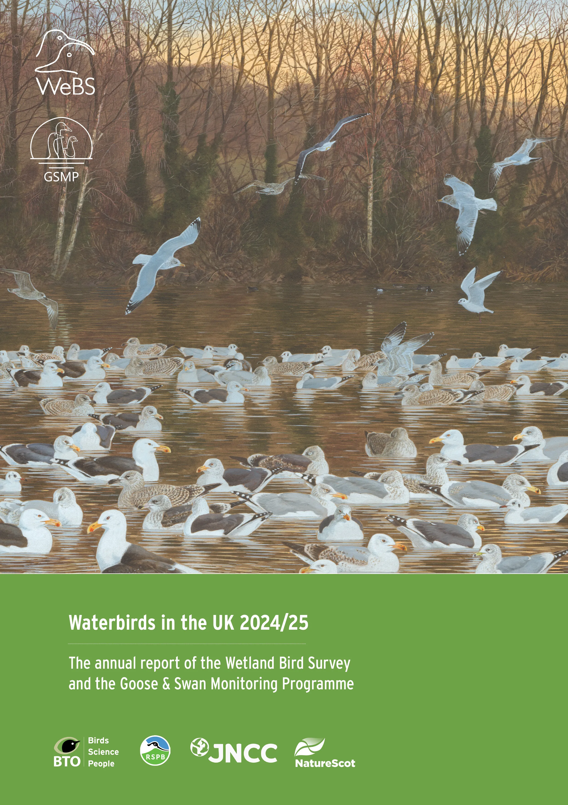
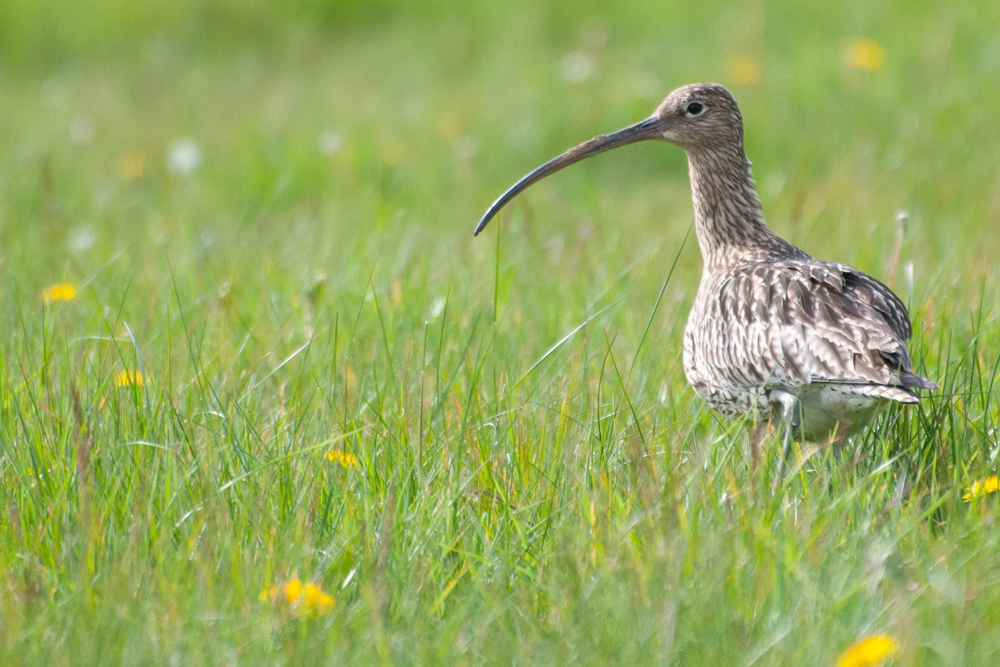
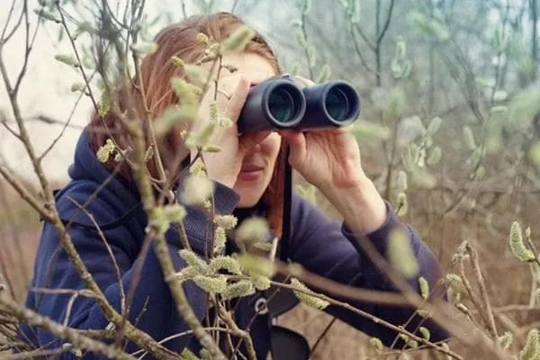
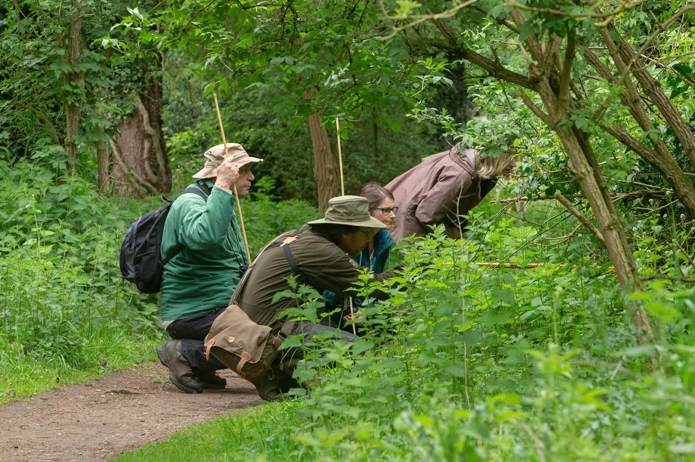
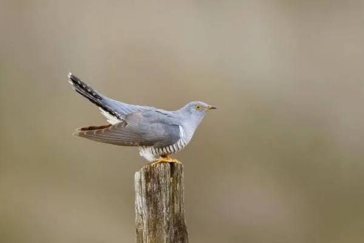

Report · 2024–25
Waterbirds in the UK, published
The latest results from the Wetland Bird Survey and Goose & Swan Monitoring Programme — built on the fieldwork of 4,000 volunteers.
Read Waterbirds in the UK →
We are the UK's leading bird research charity — turning the observations of tens of thousands of volunteers into the science that protects nature.
Birds tell us about the health of our environment. By tracking how their populations change, we can sound the alarm — and shape the decisions that protect the natural world.
The British Trust for Ornithology brings together the curiosity of volunteer birdwatchers and the rigour of professional scientists. Together we gather the long-term data that no one else can.
That evidence informs governments, conservation bodies and landowners — guiding good environmental decisions across the UK and beyond.
How we work →
The latest results from the Wetland Bird Survey and Goose & Swan Monitoring Programme — built on the fieldwork of 4,000 volunteers.
Read Waterbirds in the UK →
Youth camps across all four UK nations, in partnership with the Scottish Ornithologists' Club. A new generation steps into the field.
Bird Camps 2026 →

Every record counts. Whether you have five minutes or every weekend, there's a place for you in UK bird science.
Contribute to long-running surveys like BirdTrack and the Breeding Bird Survey — from your garden or your local patch.
See all projects →A regular gift funds the core monitoring that keeps a finger on the pulse of the UK's bird populations.
Donate now →Country offices and a UK-wide regional network connect you to local events, people and expertise.
Our offices →
Independent science needs independent support. Your donation powers the surveys, the data tools and the people behind them.
Donate to an appeal →